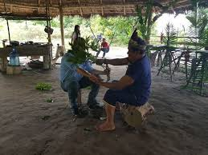
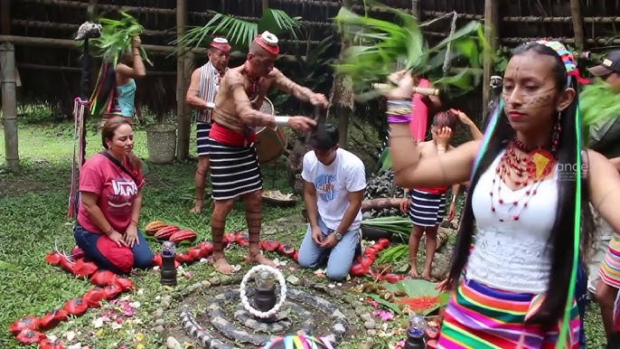
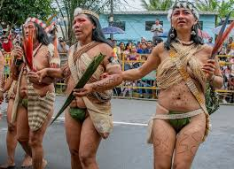
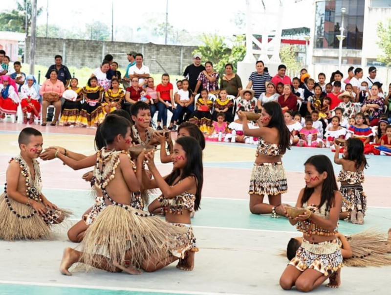

|
 Ritual kichwa para el Día de los Difuntos, con altares de comida y rezos en comunidad. |
 Vestimenta tradicional hecha con semillas, plumas y fibras naturales de la selva. |
Plato típico amazónico preparado con pescado envuelto en hoja de plátano. |
 Bebida ancestral fermentada, servida en festividades y rituales indígenas. |
 Comparsas, bailes y trajes coloridos en la fiesta de la cantonización. |
 Niños de comunidades amazónicas preservando las danzas y cantos autóctonos. |